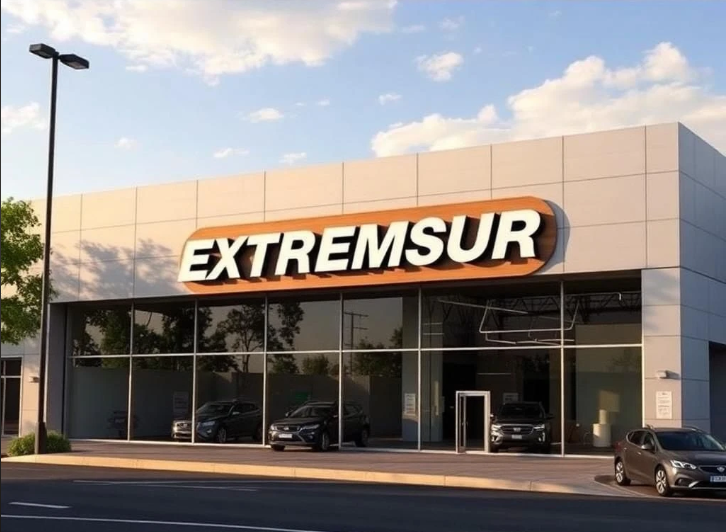
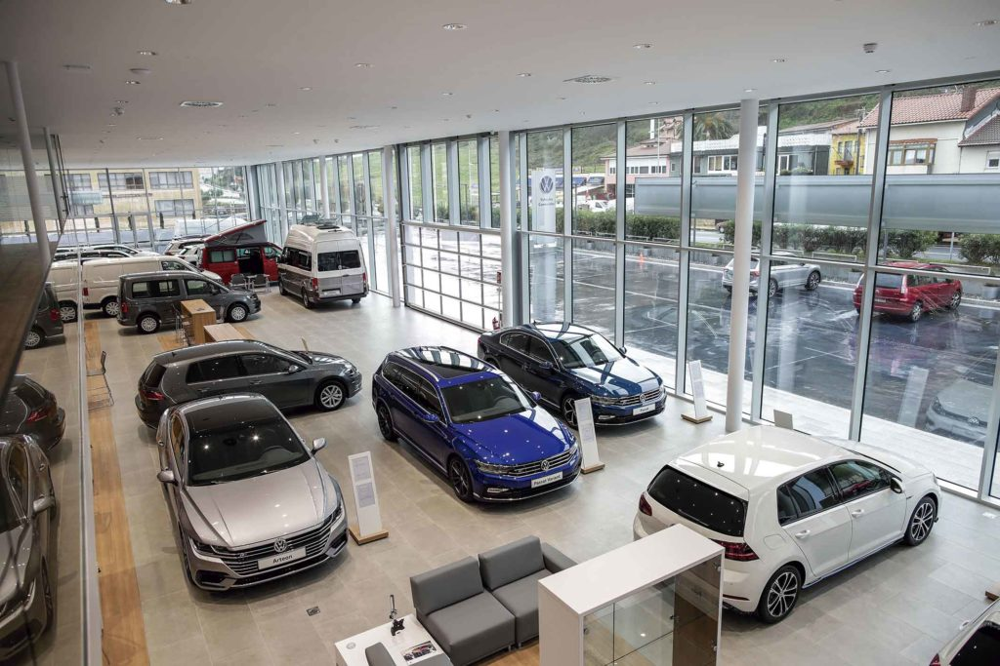

Bienvenidos a la página web de Extremsur Autos, una web donde puedes ver todos nuestros vehículos, ya sean de venta o alquiler. En la sección de catálogo puedes observar cómo nos adaptamos a tus necesidades. También puedes preguntarnos cualquier duda a través de nuestro número de teléfono, WhatsApp o correo electrónico, disponibles en la sección “Sobre nosotros”.

Extremsur Autos posee distintas secciones:
Venta: Vehículos disponibles para comprar. Puedes gestionarlo desde la web o solicitar una cita con uno de nuestros asesores.
Alquiler: Vehículos disponibles para alquilar. El cliente debe solicitar una cita en su concesionario más cercano y presentarse para recoger el vehículo.
Compra: Si deseas vender tu vehículo, puedes hacerlo directamente desde la web. Un asesor se acercará a recogerlo.
Taller: Servicio disponible tanto para particulares como empresas. Puedes solicitar una cita desde la web o ponerte en contacto con nosotros desde el apartado de contacto.